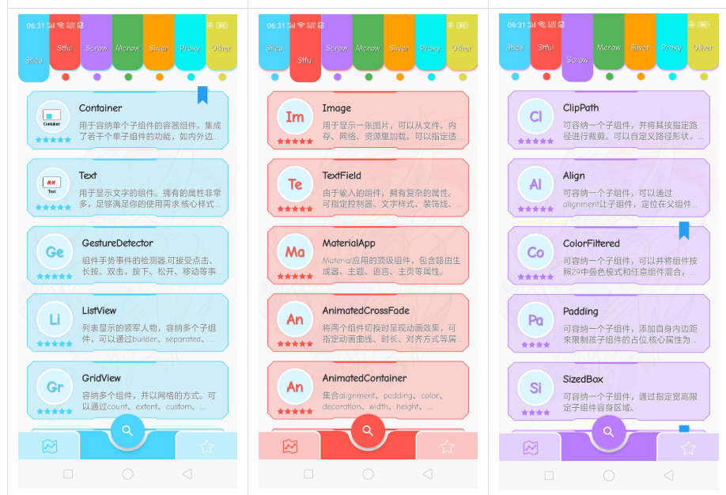
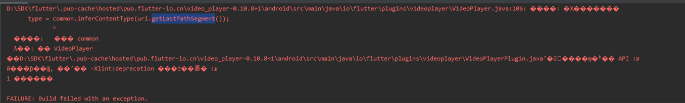

学习Flutter-跨平台UI开发框架
- 作者:
- 淡白
- 创建时间：
- 2020-04-18 22:07:00
- Flutter 跨平台 Dart
摘要：本文介绍了Flutter跨平台UI开发框架以及学习和使用Flutter的一些基本要点。首先介绍了Flutter所采用的开发语言Dart的特性和基本语法。然后介绍了Flutter的运行环境安装和常用组件的使用，推荐了一个组件Demo项目和一个Flutter项目示例地址。最后，展示了一个简单的启动动画的实现，并总结了Flutter的优势和不足。总体而言，Flutter是一个快速上手的跨平台UI开发框架，特点是UI性能强大，开发效率高。然而，还存在一些坑需要填，且在调用硬件和系统API时仍需依靠原生平台。但作为一个学习和掌握的技术，Flutter仍然是值得一学的。
开篇
Flutter一个跨平台UI开发框架.2018发布1.0当时只是了解了下并没有学习.近来学习了一下Flutter并运用到了开发中.
学习Dart
学习Flutter得先学习Flutter所采用的开发语言Dart. Dart是一门由Google开发的面向对象的语言.语法和Java和JavaScript很相似.Java开发者半个小时就能上手.
Dart 的特性:
- 单进程异步事件模型；
- 强类型，可以类型推断；
- DartVM，具有极高的运行效率和优秀的代码运行优化，根据早前的基准测试， - 性能比肩 Java7 的JVM；
- 独特的隔离区( Isolate )，可以实现多线程；
- 面向对象编程，一切数据类型均派生自 Object ；
- 运算符重载，泛型支持；
- 强大的 Future 和 Stream 模型,可以简单实现高效的代码；
- Minix 特性，可以更好的实现方法复用；
- 全平台语言，可以很好的胜任移动和前后端的开发。
- 在语法上，Dart 提供了很多便捷的操作，可以明显减少代码量。比如字符连接，可以直接 “my name is \(name, age is \)age”，无需+号拼接，也无需做类型转换。
void main() {
var str='Hello, World!';
print(str);
}
输出:
Hello, World!
Dart官方文档:文档
Flutter运行环境安装
官网官方教程
下载完Flutter的SDK后配置环境变量
进入IDEA或Android Studio安装Dart和Flutter的插件.
cmd运行
flutter doctor检查安装情况
Flutter组件
刚开始很多组件用不明白就多看看这个.记录了大部分组件的使用演示和代码以及常用属性

Flutter组件开发结构比安卓的xml结构开发更清晰加上Flutter热编译速度快 马上就能看到效果,加快了开发速度. 教程地址
使用Flutter进行项目开发
项目地址:Github
简单的启动动画实现
可提交预加载首页数据
class BootAnimation extends StatefulWidget {
BootAnimation({Key key}) : super(key: key);
@override
_BootAnimation createState() => _BootAnimation();
}
class _BootAnimation extends State<BootAnimation>
with SingleTickerProviderStateMixin {
AnimationController _controller;
Color xzColor = Colors.black;
@override
void initState() {
super.initState();
getSyData();
var duration = new Duration(seconds: 3); //定义一个三秒种的时间
new Future.delayed(duration, () {
//设置定时执行
goToHomePage();
});
_controller = new AnimationController(
duration: const Duration(milliseconds: 2000),
vsync: this,
);
_controller.addListener(() {
setState(() {
print(_controller.value);
if (_controller.value == 1) {
xzColor = Colors.grey;
}
});
});
_controller.forward();
}
@override
void dispose() {
_controller.dispose();
super.dispose();
}
// 重写build 方法，build 方法返回值为Widget类型，返回内容为屏幕上显示内容。
@override
Widget build(BuildContext context) {
return Scaffold(
body: Container(
decoration: BoxDecoration(color: Colors.black),
child: Center(
child: Container(
width: 200,
height: 100,
child: Column(
children: <Widget>[
Opacity(
opacity: _controller.value,
child: Text(
"淡白影视",
style: TextStyle(
fontSize: 36 * _controller.value,
fontWeight: FontWeight.bold,
color: Colors.white),
)),
Text(
"看你想看",
style: TextStyle(fontSize: 16, color: xzColor),
)
],
),
))),
);
}
goToHomePage() {
Navigator.of(context).pushReplacementNamed("/MainPage"); //执行跳转代码
}
//获取首页数据并存储
getSyData() async {
var response = await http.get("https://dbys.vip/sy");
Future<SharedPreferences> _prefs = SharedPreferences.getInstance();
SharedPreferences prefs = await _prefs;
prefs.setString("syData", response.body);
}
}
总结
坑比较多,得慢慢填.热编译容易出问题,在修改逻辑代码代码可能需要重新编译才行. 修改玩部分代码后直接编译不过.不是代码的问题 是缓存的锅 
Flutter虽然跨平台和ui性能比较强,单终究是要运行在安卓和ios上的.如果需要调用硬件和系统api就得依靠原生.
Flutter的优势主要还是在UI方面.其次就是开发上手比较快.前端后端学起来都比较容易.还是值得一学.